Cochabamba
Departamento de Cochabamba · Ciudades
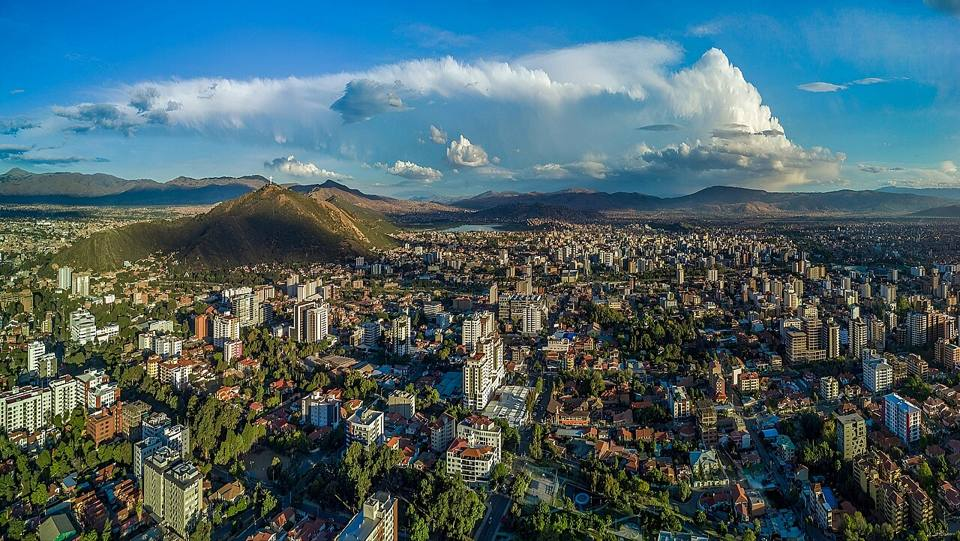
Cochabamba es la Bolivia que vive bien: una gran ciudad de valle, verde y soleada, donde se come mejor que en cualquier otro lugar del país. Es el lugar para agarrarle el ritmo a Bolivia, perderse en el inmenso mercado de La Cancha y subir al Cristo de la Concordia, más alto que el de Río. También es ideal para aclimatarse poco a poco antes de subir al Altiplano.
Qué hacer
- Cristo de la Concordia (teleférico o a pie por las gradas)
- La Cancha, uno de los mercados al aire libre más grandes de Sudamérica
- Plaza 14 de Septiembre y el centro colonial
- Palacio Portales (casa del barón del estaño Simón Patiño)
- Comer: silpancho, pique macho, chicharrón, api con pastel
Qué comer
- SilpanchoCarne de res apanada y bien delgada sobre arroz y papas, con huevo frito y una ensalada de tomate y cebolla. EL plato de Cochabamba.
- Pique machoGran plato para compartir: carne y salchicha en trozos, papas fritas, cebolla, tomate, locoto y huevo duro. Abundante y un poco picante.
- ChicharrónCerdo cocido en su propia grasa hasta dorarse, con mote y chuño. El plato del domingo.
- Api con pastelBebida caliente y espesa de maíz morado con canela, con un pastel de queso espolvoreado con azúcar. El desayuno de los mercados.
También aquí
- Artesanía y mercados La CanchaUno de los mercados al aire libre más grandes de Sudamérica, en Cochabamba: frutas, especias, artesanía, todo se vende en un laberinto de calles.
Cómo llegar a Cochabamba
Laguna Alalay Carretera (bus, auto) · 15 min
Taxi o micro desde el centro.
Sucre Avión · 35 min de vuelo
Vuelos de BoA al aeropuerto de Alcantarí.
Apote Carretera (bus, auto) · 30 a 45 min
Trufi línea 106 hasta la última parada en Apote, o taxi.
Villa Albina Carretera (bus, auto) · 40 min a 1 h
Trufi a Quillacollo, y luego trufi a Pairumani (parada Villa Albina), o taxi.
La Paz Avión · 45 min de vuelo
Vuelos diarios de BoA (varios al día) al aeropuerto de El Alto.
Se llega directo a 4000 m: peor para la aclimatación.
Tarata y Cliza Carretera (bus, auto) · 45 min
Trufis frecuentes a Tarata y Cliza.
Santa Cruz Avión · 55 min de vuelo
Vuelos diarios de BoA al aeropuerto Viru Viru.
Inca Rakay Carretera (bus, auto) · 1 h + 2 h de caminata
Trufi a Quillacollo y luego a Sipe Sipe, y subida a pie.
Tarija Avión · 1 h de vuelo
Vuelos directos de BoA algunos días.
Trinidad Avión · 1 h de vuelo
Vuelos de BoA o TAM algunos días.
Parque Tunari Carretera (bus, auto) · 1 a 2 h
Taxi 4x4 o excursión guiada. Los caminos suben directo al norte de la ciudad.
Corani Carretera (bus, auto) · unas 2 h
Bus o minibús a Colomi, y luego taxi hasta la laguna, o auto.
Incallajta Carretera (bus, auto) · 3 h
Auto o excursión organizada. El transporte público es complicado (bus hasta Pocona y luego taxi).
Torotoro Carretera (bus, auto) · 4 a 5 h
Minibuses diarios desde el sur de Cochabamba (zona Av. República), temprano en la mañana. O en auto o excursión.
Confirma los horarios el día anterior: no salen cada hora.
Totora Carretera (bus, auto) · 4 h
Bus a Totora o bus de la carretera antigua a Santa Cruz.
Mizque Carretera (bus, auto) · 3 h 30 a 4 h
Buses y minibuses diarios desde Cochabamba.
Yungapampa Tour en 4x4 o excursión · 4 h en 4x4 + 1 a 2 días a pie
Con una agencia o un guía local, hasta Huari Pucara, y luego a pie con mulas.
Oruro Carretera (bus, auto) · 4 a 5 h
Buses frecuentes desde la Terminal de Cochabamba.
Aiquile Carretera (bus, auto) · 4 a 5 h
Buses y minibuses desde Cochabamba, algunas salidas al día.
La Paz Carretera (bus, auto) · 7 a 8 h
Buses de día o de noche desde la Terminal de Cochabamba (muchas empresas, cada hora). De noche conviene un bus cama.
Una subida muy linda al Altiplano. De día para disfrutar el paisaje.
Samaipata Carretera (bus, auto) · 8 a 10 h
Bus nocturno a Santa Cruz por la carretera antigua (pide bajar en Samaipata) o auto.
Más lenta que la carretera nueva pero mucho más linda, y pasa por Samaipata.
Sucre Carretera (bus, auto) · 9 a 11 h (de noche)
Bus nocturno desde la Terminal de Cochabamba.
Largo y con muchas curvas: el avión (35 min) ahorra un día.
Santa Cruz Carretera (bus, auto) · 9 a 11 h
Buses nocturnos muy frecuentes (Terminal de Cochabamba a la Terminal Bimodal de Santa Cruz).
Fotos de Cochabamba
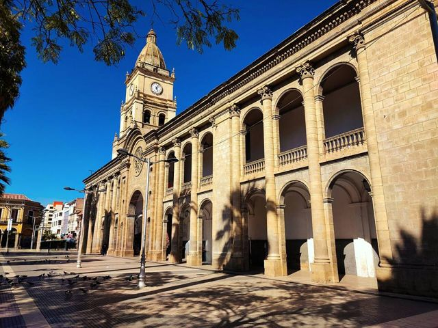

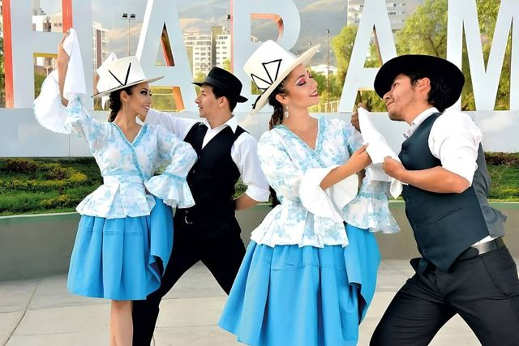

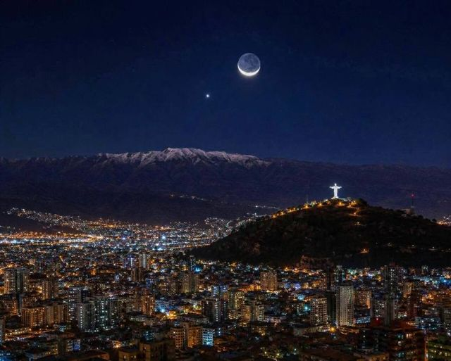

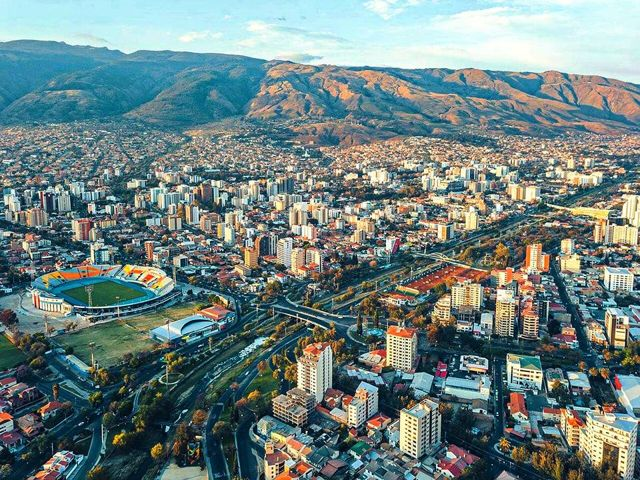

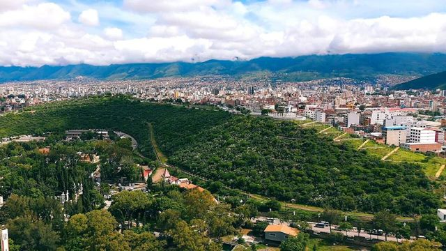

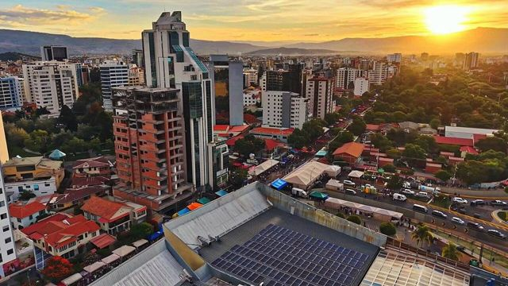

Otros lugares de la región
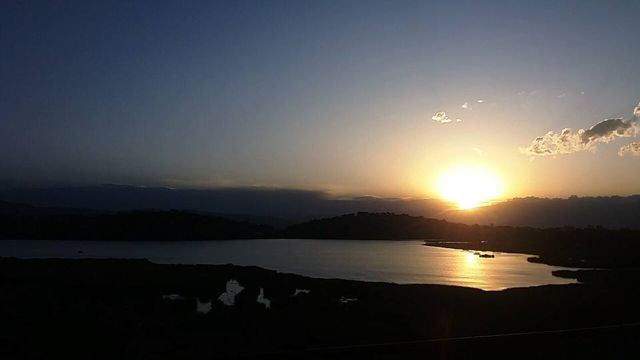
Laguna AlalayUna gran laguna en el corazón de Cochabamba, refugio de aves al pie de los cerros.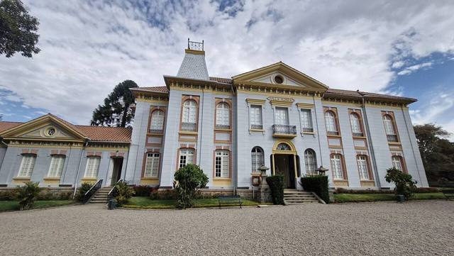
Pairumani y Villa AlbinaLa villa del barón del estaño Simón Patiño, sus jardines, y el inicio de un sendero al Tunari.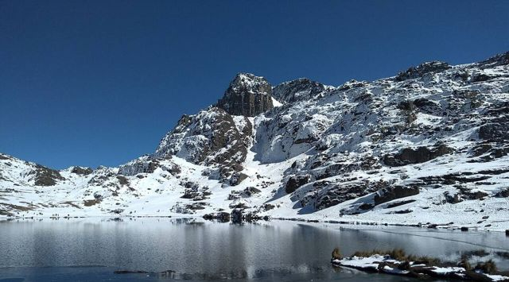
Parque Nacional TunariLas montañas justo encima de la ciudad: lagunas de altura y la cumbre del Tunari (5035 m).- Apote y sus cascadas gemelasUn valle de montaña encima de Tiquipaya, con dos cascadas lado a lado y senderos hacia el Tunari.
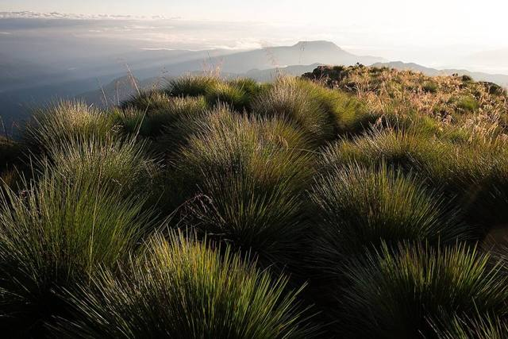
YungapampaUn refugio sobre un mar de nubes, en la cara norte del Tunari, tierra del oso andino.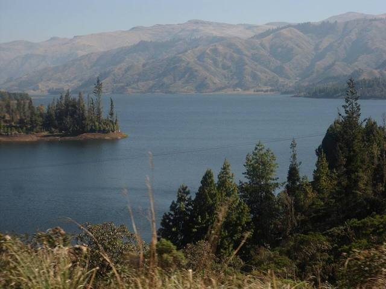
Laguna CoraniUn gran lago de represa entre bosques de pinos y montañas, conocido por su trucha.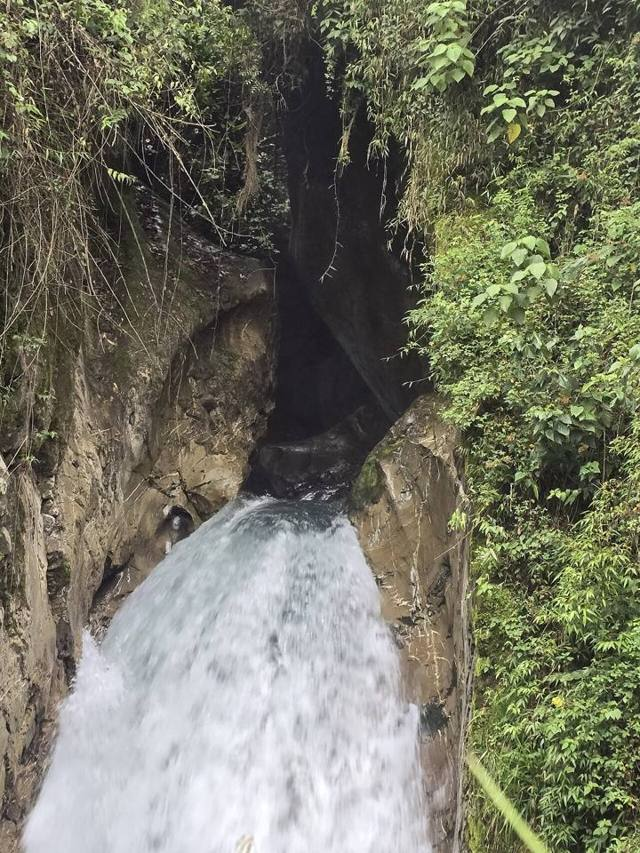
IncachacaUn bosque de nubes al borde del Chapare, con un puente inca, cascadas y una vieja planta eléctrica.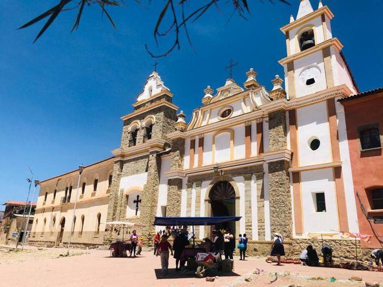
Valle Alto: Tarata y ClizaPueblos coloniales del valle, mercados y chicha.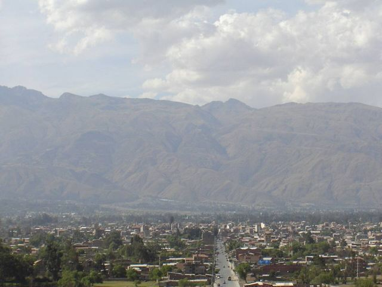
Quillacollo e Inca RakayRuinas incas encima de Sipe Sipe, y Quillacollo, ciudad de la Urkupiña.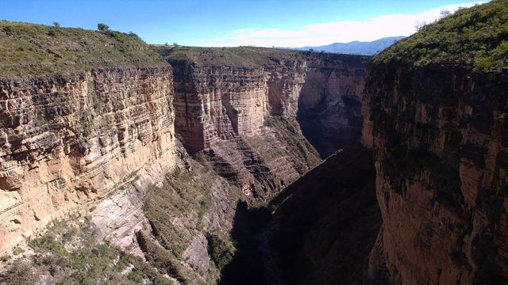
Parque Nacional TorotoroHuellas de dinosaurio, un cañón espectacular y la caverna de Umajalanta.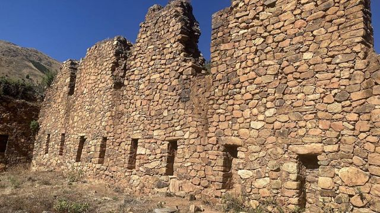
IncallajtaEl sitio inca más grande de Bolivia, en un valle aislado.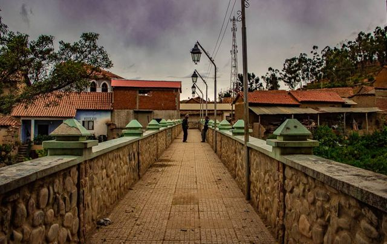
TotoraPueblito colonial muy bien conservado en la carretera antigua a Santa Cruz.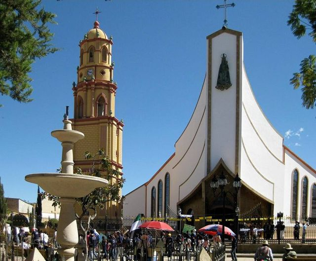
AiquileLa capital nacional del charango, a medio camino entre Cochabamba y Sucre.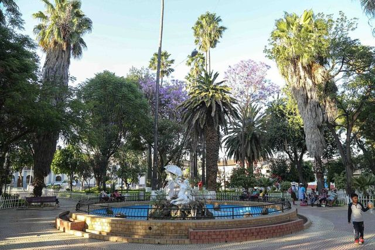
MizquePueblo colonial de un valle cálido, tierra de la paraba frente roja.